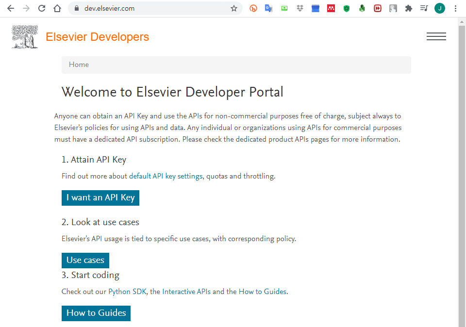
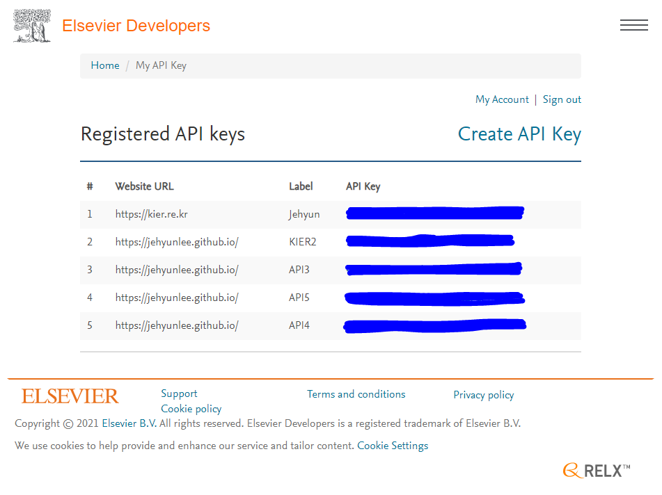
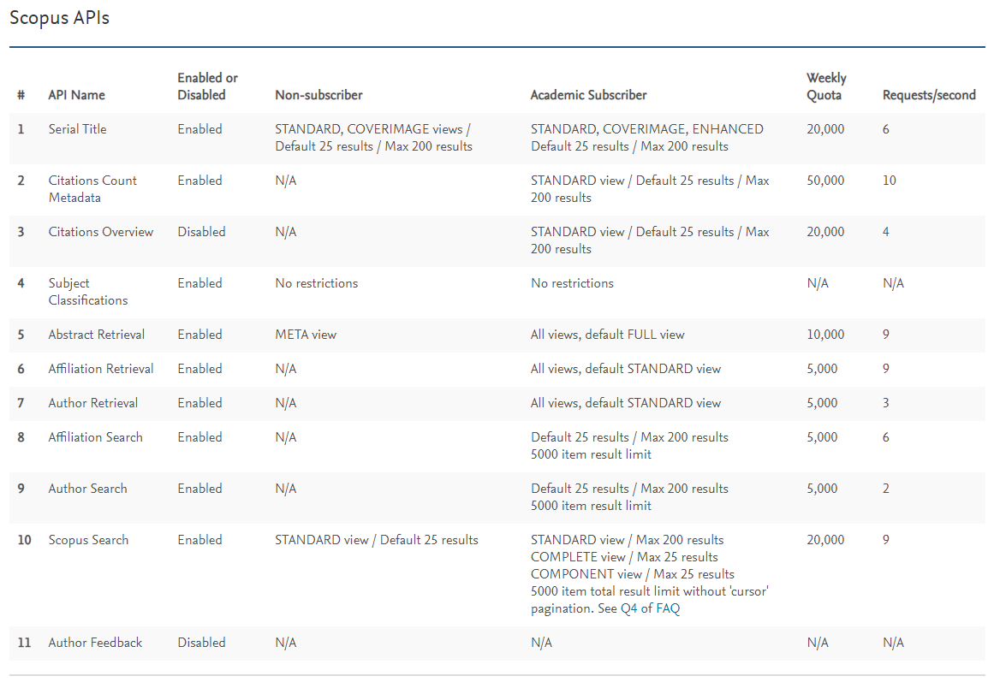
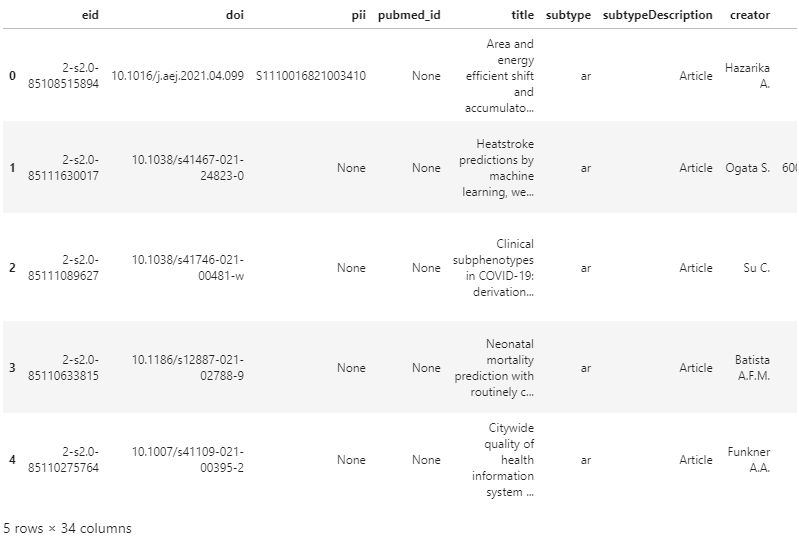
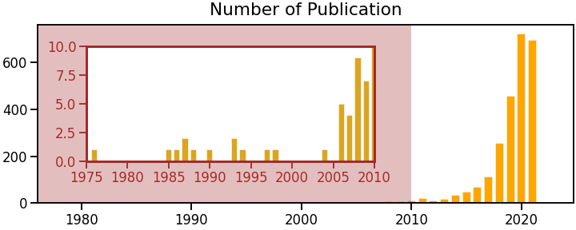

- 연구자라면 논문 검색이 일상입니다.
- 매년 출간되는 논문의 편 수는 기하급수적으로 늘고 있습니다.
- 새로운 논문을 찾거나 전체적인 트렌드를 파악하기가 점점 어려워집니다.
- elsevier사가 제공하는 API를 사용해서 파이썬으로 데이터를 받고 정리합시다.
1. Elsevier
1.1. 계정
- Elsevier에 가입하고 로그인합니다.

1.2. API 획득
데이터를 받아오려면 API key가 필요합니다.
https://dev.elsevier.com/에서 API key를 신청합니다.
I want an API Key를 눌러 들어갑니다.
Create API Key를 눌러 API Key 생성 모드로 들어갑니다.
Label과 Website URL에는 적당히 넣어줍니다.
그리고 스크롤을 내려 하단의 API Service Checkbox와 Elsevier Provisions for Text and Data Mining (TDM)에 동의 후 submit을 누릅니다.
API Key마다 1주일간 한도가 있습니다. 많은게 좋습니다.
속도 제한도 있으니 참고합니다.

2. Pybliometrics & Pandas DataFrame
2.1. Pybliometrics로 검색결과 받아오기
M. Rose et al. “pybliometrics:ScriptablebibliometricsusingaPythoninterfacetoScopus”, Software X 10 100263 (2019)
pybliometrics
파이썬을 사용해 Scopus 검색과 초록, 참고문헌 등을 받아올 수 있는 라이브러리입니다.
공식 홈페이지에 자세한 설명이 있습니다.
여기서는 간단하게 검색과 초록 다운로드 방법을 알아봅니다.
1
2
3
4
5
6
7
8
9
10
11
12
13# Scopus에서 Search하는 라이브러리를 불러옵니다.
from pybliometrics.scopus import ScopusSearch
# 검색어: Scopus에서 키워드를 넣고 검색하면 발생하는 바로 그 검색식입니다.
# 여기서는 도시 연구에 머신러닝과 딥러닝을 활용한 것들을 찾기로 했습니다.
query = ' TITLE-ABS-KEY ( machine AND learning OR deep AND learning ) AND \
TITLE-ABS-KEY ( city )'
# 검색 시작
s = ScopusSearch(query,
download=True, # 검색 결과를 저장합니다.
verbose=True) # 진행 상황을 표시합니다.- 실행 결과:
1
2Downloading results for query " TITLE-ABS-KEY ( machine AND learning OR deep AND learning ) AND TITLE-ABS-KEY ( city )":
Progress: |██████████████████████████████████████████████████| 100.00% Complete
- 실행 결과:
처음 실행한다면 API Key를 넣으라는 작은 입력창이 뜰 것입니다.
아까 받은 API Key를 여기에 복사해서 넣으면 됩니다.
여러 개의 API Key를 이어서 사용하고 싶다면 더 좋은 방법이 있습니다.
~/.scopus/에 있는config.ini파일에 API Key를 쉼표(,)로 띄워서 넣어두면 자동으로 불러옵니다.
몇 편이나 검색됐는지 확인합니다.
1
s.get_results_size()
- 실행 결과:
1
5275
- 실행 결과:
5275편의 논문 정보를 받았습니다.
scopus.com에서 검색을 해도 같은 숫자가 보일겁니다.
그러나 웹 검색으로는 이만큼 못가져옵니다.
API의 진가는 매우 다양한 정보를 한데 가져와서 처리할 수 있다는 데 있습니다.
2.2. Pandas로 검색결과 정리하기
받아온 정보를 데이터프레임에 넣습니다.
1
2
3import pandas as pd
df_s = pd.DataFrame(s.results)
df_s.head()
column이 34개나 있다고 합니다.
맨 위 논문을 가지고 column의 이름과 내용을 살펴봅니다.
논문을 많이 본 분이라면 어떤 내용인지 한번에 알 수 있을 겁니다.
1
2s0 = df_s.loc[0]
s0- 실행 결과: 문헌, 저자, 소속, 출판 관련 정보가 빼곡합니다.
1
2
3
4
5
6
7
8
9
10
11
12
13
14
15
16
17
18
19
20
21
22
23
24
25
26
27
28
29
30
31
32
33
34eid 2-s2.0-85108515894
doi 10.1016/j.aej.2021.04.099
pii S1110016821003410
pubmed_id None
title Area and energy efficient shift and accumulato...
subtype ar
subtypeDescription Article
creator Hazarika A.
afid 60115117;60015723;60000912
affilname Indian Institute of Information Technology Guw...
affiliation_city Guwahati;Riyadh;Howrah
affiliation_country India;Saudi Arabia;India
author_count 4
author_names Hazarika, Anakhi;Poddar, Soumyajit;Nasralla, M...
author_ids 57209273202;55321684000;55638677600;57207594144
author_afids 60115117;60115117;60015723;60000912
coverDate 2022-01-01
coverDisplayDate January 2022
publicationName Alexandria Engineering Journal
issn 11100168
source_id 13907
eIssn None
aggregationType Journal
volume 61
issueIdentifier 1
article_number None
pageRange 795-809
description Convolutional Neural Networks (CNNs) exhibit s...
authkeywords Approximate computing | Convolution operation ...
citedby_count 0
openaccess 1
fund_acr PSU
fund_no MEITY-PHD-3043
fund_sponsor Prince Sultan University
- 실행 결과: 문헌, 저자, 소속, 출판 관련 정보가 빼곡합니다.
종류별로 구분을 합시다.
예를 들어, 나는 Journal에 실린 논문을 원하지 책이나 컨퍼런스 프로시딩은 원하지 않는다면, 간단히 추릴 수 있습니다.
어떤 종류의 출판물들이 있는지 살펴봅니다.
1
df_s["aggregationType"].unique()
- 실행 결과: 익숙한 분류들이 보입니다.
1
2array(['Journal', 'Conference Proceeding', 'Book', 'Book Series',
'Trade Journal'], dtype=object)
- 실행 결과: 익숙한 분류들이 보입니다.
년도별로 Journal에 출간된 논문들의 수를 세어봅니다.
pandas DataFrame의
query와groupby를 사용하면 간단합니다.년도별 출간 편수를 세기 위해 논문마다 1을 할당하고
1
2
3
4
5df_s["year"] = df_s["coverDate"].apply(lambda x: x.split("-")[0])
df_s["year"] = df_s["year"].astype(int)
df_s["num_pub"] = [1] * df_s.shape[0]
df_pubyear = df_s.query("aggregationType == 'Journal'").groupby("year").sum()
df_pubyear.values.T- 실행 결과: 년도별 출간 건수입니다.
1
2
3array([[ 1, 1, 1, 2, 1, 1, 2, 1, 1, 1, 1, 5, 4,
9, 7, 12, 21, 13, 18, 36, 49, 71, 113, 256, 457, 724,
696, 1]])
- 실행 결과: 년도별 출간 건수입니다.
2.3. Matplotlib으로 출판 추세 그리기
- Matplotlib을 이용해서 간단히 년도별 출판 건 수를 그려봅니다.
- 리뷰 논문에 하나씩 있는 그 그림입니다.
- 2010년 이전엔 논문 수가 많이 적어서 안보이기에 확대를 했습니다.
1
2
3
4
5
6
7
8
9
10
11
12
13
14
15
16
17
18
19
20
21
22
23%matplotlib inline
import matplotlib.pyplot as plt
import seaborn as sns
sns.set_context("talk")
fig, ax = plt.subplots(figsize=(10, 4), constrained_layout=True)
ax.bar(df_pubyear.index, df_pubyear["num_pub"], fc="orange", ec="w")
ax.set_title("Number of Publication", fontsize="large", pad=12)
c_inset = "brown"
ax_inset = fig.add_axes([0.15, 0.3, 0.5, 0.5])
ax_inset.bar(df_pubyear.index, df_pubyear["num_pub"], fc="goldenrod", ec="w")
ax_inset.set_xlim(df_pubyear.index.min()-1, 2010)
ax_inset.set_ylim(0, 10)
ax_inset.spines[["left", "right", "bottom", "top"]].set_edgecolor(c_inset)
ax_inset.spines[["left", "right", "bottom", "top"]].set_linewidth(3)
ax_inset.tick_params(color=c_inset, labelcolor=c_inset)
ax.axvspan(df_pubyear.index.min(), 2010, fc=c_inset, alpha=0.3)
ax.set_title("Number of Publication", fontsize="large", pad=12)
ax.set_xlim(df_pubyear.index.min(), )
- 다음 글에서는 API를 이용한 추가 분석을 이어가겠습니다.